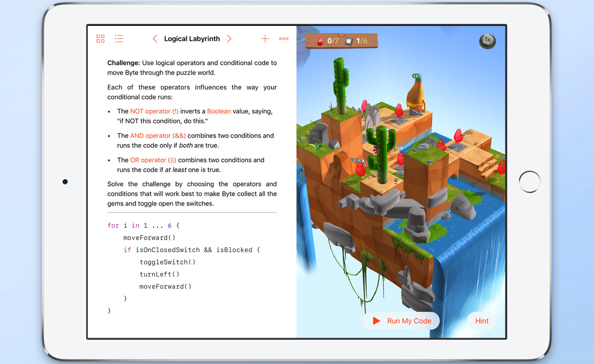

This is my first website. I recently joined GitHub and completed the Swift Playgrounds course. It was an exciting introduction to programming!
In Swift, 'let' declares constants that cannot be changed after initialization, while 'var' declares variables that can be modified. I learned how to write code, manipulate text sizes, and control characters like Blu and Byte.
Key concepts include:
Variables can change, but constants stay the same. Blu jumps while the expert secures the lock. They got tired, and so did I! Byte moves forward to collect the reddest gem, turns left, and toggles the switch. I was exhausted but incredibly happy - time for a break!
I also learned to incorporate images and sounds into my programs.
Row trusts you, Vivi locks you up and toggles switches for gems. The expert rests while Blu jumps on him. Byte navigates through functions and loops, turns switches, and teleports. So happy! Yay! Bye bye, thanks for reading!

Screenshot from Swift Playgrounds